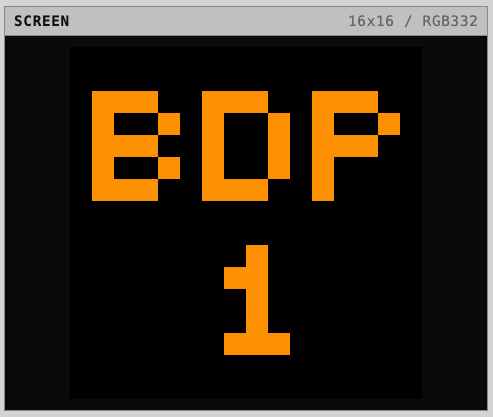

The Open Source Group at The Gianforte School of Computing, Montana State University
A 16-bit educational computer with emulator, assembler, and tooling for learning how computation works.

An 8-bit learning computer inspired by the Little Man Computer, baby brother of the MTMC-16.
A scripting language/pseudo-code for the JVM & Minecraft
A small Java ORM with no code generation, no config files, and no SQL hiding. Works with plain POJOs.
A CSS library that styles semantic HTML with a neo-classical digital look and feel.